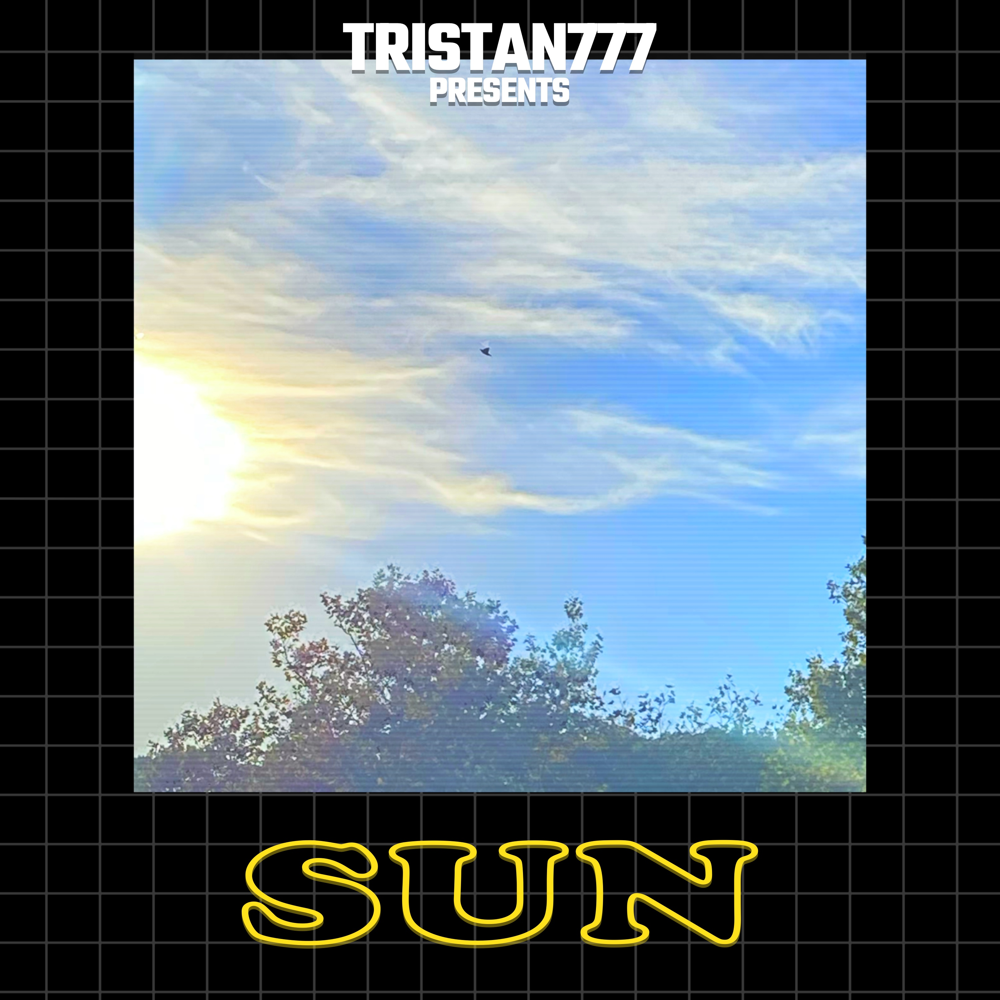

May Your Tree is a song written, composed, and produced by Tristan Glover, featuring vocals and lyrics by Dominic Zow. The track serves as Tristan777's debut on streaming services such as Spotify and Apple Music. During early November, Tristan got inspiration for the song after listening to Tyler, The Creator's Music Inspired by Illumination & Dr. Seuss' The Grinch (aka the Grinch EP). He texted Dominic and asked if he wanted to collaborate on a Christmas themed song and after getting together in YPC's building, the two came up with Christmas words, themes, and rhyming words. The chords are heavily inspired by O, Christmas Tree.
Sun is a song written, composed, and produced by Tristan Glover. It was originally written as a poem for Ms. Greene's African American Dramatic Literature class as a slam poem. He began to produce a track for it simultaneously, taking heavy inspiration from Tyler, The Creator's unreleased track For The Time Being, featuring Kali Uchis. The lyrics speak about a hypothetical love interest, highlighting Black attributes such as "copper coded skin", "chocolate colored eyes", and "coils & curls". The songs metaphor of this love interest being the sun to Tristan's sunflower writes a message of how his interest in this person makes him feel energized and bloom.
